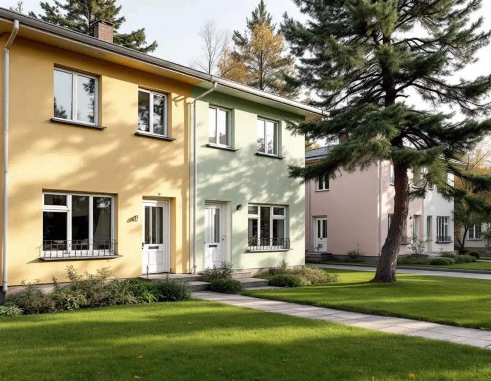
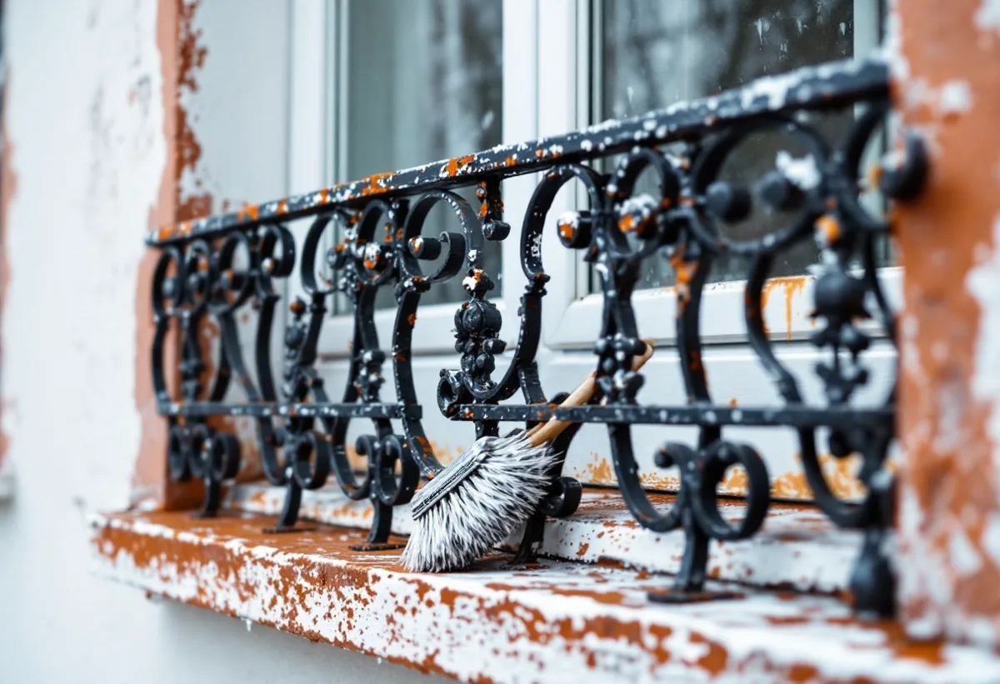

Platsbesök
Vi tittar på panel, räcken, fönster och dörrar, eller på väggar och tak i lägenheten.
Vällingby och Råcksta är riksintresse för kulturmiljövården, och det påverkar mer än centrumet. Ska ett radhus få en ny kulör gäller andra regler här än i de flesta villaområden. Geal Entreprenad AB målar radhus, lägenheter och villor i Vällingby, Råcksta, Grimsta och Kälvesta, med gratis platsbesök och skriftligt kostnadsförslag.

Stockholms översiktsplan beskriver Vällingby-Råcksta (AB 120) som landets första ABC-stad, med arbete, bostäder och centrum, och ingen skulle ha längre än 900 meter till tunnelbanan. Bland de värdebärande dragen räknas de ursprungliga husens gestaltning och byggnadsdetaljer som fönster, entrépartier, balkonger och räcken, och centrumanläggningarnas omsorg om form-, färg- och materialverkan.
Det är detta som gör färgfrågan annorlunda här. Stockholms stad skriver att du behöver söka bygglov för åtgärder som annars är bygglovsbefriade om huset ligger inom ett riksintresse för kulturmiljövården, som visas med blå ring i Stadsmuseets klassificeringskarta. Ett kulörbyte på ett radhus i Vällingby kan alltså kräva lov, trots att samma åtgärd är lovfri i många andra stadsdelar. För flerbostadshus krävs bygglov för fasadändringar mot allmän plats oavsett läge, så en förening med lamellhus kring centrum behöver söka lov för en ny kulör på gatusidan.
Att måla om i samma kulör räknas enligt Boverket normalt som underhåll. Därför börjar vi med att ta reda på exakt vilken kulör och glans huset har i dag, så att ommålningen verkligen blir samma.

Stadsmuseets skrift om Råcksta beskriver bostadshusen som mycket välplanerade och kanske något av det bästa som byggdes under 1950-talet. Särskilt radhusen vid Långseleringen och Ramselegatan har uppmärksammats. De ritades av arkitekten Adrian Langendal och var färdiga 1953, och karakteristiskt är den livfulla färgsättningen och omväxlande detaljer som de dekorativa räckena vid de franska fönstren.
Stadens vägledning för småhusområden nämner också radhusområdena Atlantis i nordost och Omega i nordväst som kulturhistoriskt synnerligen värdefulla. Vägledningen räknar tidstypisk färgsättning och enhetligt utformade husgrupper till karaktärsdragen i tunnelbanestädernas radhusområden.
Smidesräcken vid franska fönster målas för hand. Riksantikvarieämbetets handbok beskriver för linoljefärg på järn och plåt att ytan stålborstas och dammas av och sedan grundas och stryks en till två gånger. Kulören tar vi fram från räcket innan något beställs. Stadsdelen har också äldre spår: Råcksta gård byggdes enligt Stadsmuseet på 1720-talet som en timrad, rödfärgad herrgård och moderniserades in- och utvändigt på 1770-talet.
Enligt stadens områdesfakta för 2025 fanns 449 bostäder i småhus i Vällingby, och 228 av dem var bostadsrätter. I Råcksta var 91 av 390 småhus bostadsrätter. I ett radhusområde som ägs av en förening är fasaden normalt föreningens, och då är det styrelsen som beställer målningen.
Skatteverket ger rotavdrag i en bostadsrätt bara för arbete inne i bostaden, till exempel målning av väggar, tak och insidan av fönster och ytterdörrar. Att måla fasader, balkonger eller altaner ger inget avdrag, och arbete på gemensamma delar som tak, fasader och trapphus ingår inte heller. Föreningen kan alltså inte dra rotavdrag för fasadmålningen.
Bor du i ett radhus med äganderätt gäller i stället reglerna för småhus, och då ger även fasaden rotavdrag. Sitter det äldre fasadskivor på huset tar vi reda på vad de består av innan de tvättas eller slipas, eftersom Boverket varnar för att asbest kan frigöras vid högtryckstvätt och slipning.
Kring centrum ligger enligt översiktsplanen en zon med höga punkthus och lägre flerbostadshus, och där är det lägenheten som målas. Vi målar väggar, tak, snickerier och dörrar och tapetserar, och skyddar golv och trapphus innan arbetet börjar. I hus från 1950-talet provar vi hur den gamla takfärgen sitter innan något nytt stryks på.
Mer om radhusens tak och plåtdetaljer finns under takläggare i Vällingby, och om målning i allmänhet på sidan om målare.
Vi tittar på panel, räcken, fönster och dörrar, eller på väggar och tak i lägenheten.
Nuvarande kulör tas fram och Stadsmuseets karta kontrolleras innan något beställs.
Färgtyp, kulör, förarbete och antal strykningar, för föreningar gärna hus för hus.
Tvätt, skrapning, rostborttagning på räcken, lagning och kittning.
Grundning och strykningar i lämpligt väder, med de torktider färgen kräver.
Vi går igenom resultatet tillsammans och bättrar där det behövs.
För radhus och villor med äganderätt räknar Skatteverket fasadmålning och målning av golv, tak, väggar, fönster och element som rotarbete. Avdraget är 30 procent av arbetskostnaden, högst 50 000 kr per person och år och högst 75 000 kr tillsammans med rutavdrag.
I en bostadsrätt gäller avdraget bara målning inne i bostaden. Material och resor ger inget avdrag. Geal drar avdraget direkt på fakturan.
För ett radhus avgör mängden trä, räcken och fönster och om flera hus i samma grupp målas samtidigt, så att ställningen kan flyttas mellan dem. I en lägenhet är det antalet rum och hur mycket spackling som behövs. Platsbesöket är gratis och du får ett skriftligt kostnadsförslag.
Fasad, fönster och invändig målning.
Målare i Stockholm →Takbyte, takbesiktning och plåtarbeten.
Takläggare i Vällingby →Riksintresset och villaområdena.
Attefallshus i Vällingby →Riksintresset, radhusen och våtzonerna.
Badrumsrenovering i Vällingby →Bygga till i riksintresset.
Byggföretag i Vällingby →Puts från 1950-talet och kulör i riksintresset.
Fasadmålning i Vällingby →Tegel, puts och skivor på tunnelbanestadens hus.
Fasadrenovering i Vällingby →Radhus och kedjehus i riksintresset.
Fönsterbyte i Vällingby →Radhusens fönster.
Fönsterrenovering i Vällingby →Gamla mattor, lim och asbest.
Golvläggare i Vällingby →Lamellgolv, svikt och slitskikt.
Golvslipning i Vällingby →Takplåt, rännor och beslag i riksintresset.
Plåtslagare i Vällingby →Entréer, dörrar och räcken på radhusen.
Snickare i Vällingby →Kälvesta och husgrupperna.
Takbyte i Vällingby →